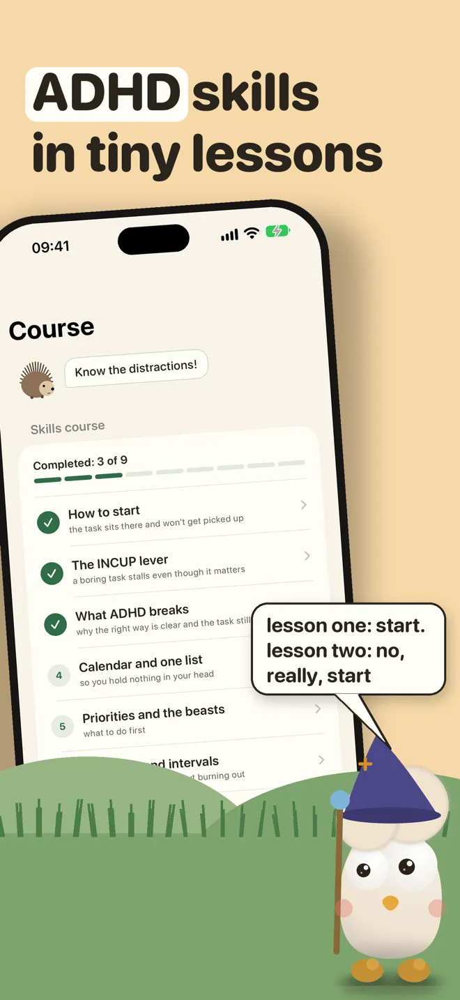
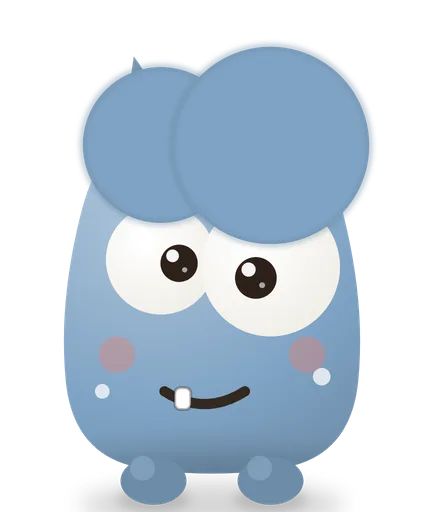

ADHD skills course: nine short lessons on iPhone
Opora teaches ADHD skills in nine short lessons inside the app. Each lesson takes one problem, like a task you can’t start or a day that runs away, and gives you a few techniques from CBT and DBT to try on it today.

The nine lessons
- How to start. For a task that sits there and won’t get picked up: a first step under two minutes, an if-then plan, a deadline for today.
- The INCUP lever. Psychiatrist William Dodson describes the ADHD nervous system as interest-based. Challenge, interest, novelty, urgency and passion switch it on, so you add one of them to a boring task.
- What ADHD breaks. Why the right way is clear and the task still sits, and how to move the plan out of your head.
- Calendar and one list. Write it down first and keep everything in two places.
- Priorities and the beasts. Three urgent tasks at most, big tasks split into pieces, small ones done in a batch.
- Attention and intervals. A round length that fits your focus, a note for stray thoughts, a real break.
- Environment and friction. Make the right thing the easiest one and remove distractions before you start.
- Impulse and the pause. STOP, 5-4-3-2-1 grounding, TIPP and a plan for leaving hyperfocus.
- Rest and the daily base. Rest as a task, because the other lessons don’t work without it.
What’s free
The first lesson is free in full, and two techniques from the INCUP lesson are free too. Opora Plus opens the other lessons. The timer, tasks and the practices for hard moments stay free.
The app around the course
- A timer that sets its round to your own focus length. The ADHD timer page explains how it works.
- Tasks sorted as four animals, so the urgent pile stays at three.
- Ideas for starting a task you keep putting off are on the task paralysis page.

Start the first lesson in Opora
- The first lesson, the timer and tasks are free.
- No account and no ads.
- Your tasks stay on your iPhone.
For iPhone with iOS 17 or later. Opora does not replace care from a specialist.
Want a first look at your own symptoms? The adult ADHD self-check asks the 18 questions of the WHO ASRS v1.1 scale and scores them in your browser.